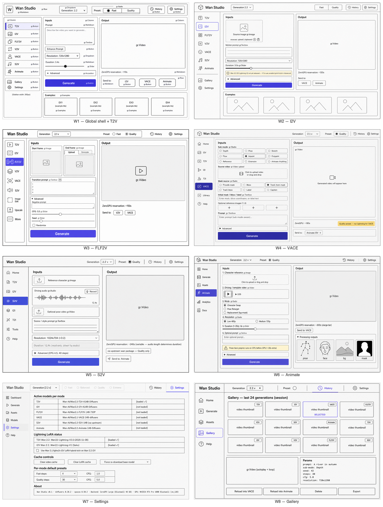

All 8 screens at a glance
Click to open the full-resolution montage in a new tab.

Global shell + T2V mode active
The default landing view. Demonstrates the full chrome — top header with Generation dropdown + Fast / Quality preset radio, left sidebar with all 7 modes plus Gallery + Settings, two-column main area with Inputs (prompt + duration + advanced accordion + Generate) and Output (empty video, ZeroGPU reservation, Send-to chips), and an Examples row beneath.
I2V mode panel
Same shell, I2V active. Adds a source image upload slot with paste-from-clipboard hint, a motion-focused prompt, and a yellow info banner explaining the Wan 2.2 I2V Lightning V1-only quality caveat with a link to enable the community hybrid trick.
FLF2V (first-last-frame to video)
First-last-frame to video, Wan 2.1 only. Two side-by-side image slots; the end-frame slot is itself wrapped in nested Upload / Generate tabs (Generate uses a T2I model to synthesize the end frame). Advanced accordion open by default to expose CFG = 5.5.
VACE mode (densest screen)
The densest screen by design. Top-level 3×3 sub-mode radio (Depth / Pose / Sketch / Flow / Inpaint / Outpaint / Reference / Extension / Animate-Anything) plus a secondary 6-option mask-source radio when Inpaint is active. Conditional reference-image gallery (1–3 slots) and a sub-mode-aware prompt placeholder. Quality preset only (Lightning is untrained on VACE).
S2V (speech-to-video)
Speech-driven video. Audio upload with stylized waveform preview and microphone record source. Read-only duration field
(driven by audio length). Note that S2V is served via the upstream wan package — diffusers doesn't have a
pipeline class yet.
Animate mode
Character animation + replacement. Reference image + driving video, three-option mode radio (Character Swap / Pose Retarget / Replacement), low / medium resolution radio, warning banner about CPU preprocessing time. Output column adds an open "Processing outputs" accordion showing intermediate pose / face / bg / mask videos for debugging.
Settings / Model manager
Pure configuration page — no video player. Active models table per mode with load status, Lightning LoRA status with the Wan-2.1-on-Wan-2.2 hybrid-trick checkbox, cache control buttons, per-mode preset overrides, and an About monospace block.
Gallery / history grid
Session history grid (3×4 tiles, mode-badge per tile, indigo border on the selected one) with a detail view below showing the selected video, its params, and Reload-into-mode action buttons.